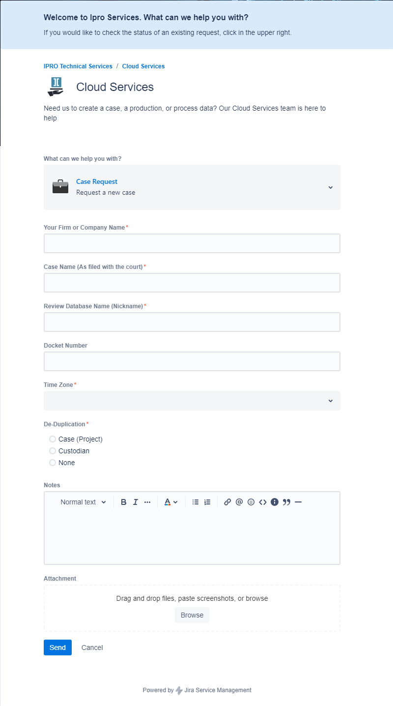

Getting Started: Working with Cloud Services
The information compiled below is intended to assist new users with getting started in and working with Cloud Services. It provides an overview of fundamental procedures in including:
Request a New Case
New cases may be created upon request by submitting a Services ticket. When submitting the request, complete the form with all necessary information to ensure the case is built with the proper configuration.

New cases may be requested at any time. For more information, see Cloud Services: How to Request a New Case.
Data Uploads / Ingestion
Once you receive your matter data, you will determine whether your data will need processing. Typically, processed data comes from opposing counsel, is Bates stamped, and will contain multiple file types for each document – including a metadata or load file. This data will be uploaded into the platform directly. Data that you have collected directly from your own client is most often Native data. Native data will need to be processed prior to uploading into the platform.
-
Ingesting Native Data
This is data (documents) that have not been processed into their component file types. IPRO provides a Self-Service streaming function to allow you to upload Native Data sets directly into the platform for processing. As documents are processed for Review, they will be loaded in real time into your Review Case.
For more information, see Upload Data via Self-Service.
Learning Center courses are also available here: Upload Data via Self-Service.
-
Ingesting Produced/Pre-Processed Data
This is typically for the data that is coming from opposing counsel. Pre-Processed data will typically be Bates stamped and arrive with a load file. This data will be uploaded by our Cloud Service Specialists. In order to deliver that data to our Cloud Services team, you will need to use our file transfer portal, Media Shuttle.
For more information, see Using Media Shuttle to Transfer Files.
Learning Center courses are also available here: Transfer Files Using Media Shuttle.
|

|
Note: After you upload data to Media Shuttle, you must submit a ticket or send an email to services@ipro.com letting them know that data has been uploaded to Media Shuttle for a specific project. No specific format is needed; simply include the project name and the file name in Media Shuttle.
|
Search
Once data has been loaded into your case you are ready to start searching. You have two options: Advanced Search and Visual Search.
Advanced Search
Advanced Search is a robust tool for configuring complex searches. On the Advanced Search tab, under Search Criteria, areas
can be expanded as required to define the search and/or search options. Expand each area by clicking  and click
and click  to collapse it. See Overview: Advanced Search.
to collapse it. See Overview: Advanced Search.
For a more detailed information, see Work With Advanced Search.
Learning Center courses are also available here: Advanced Search.
Visual Search
Visual Search enables you to perform and review searches by using one of three 2-dimensional charts as well as a Concept Wheel. This type of searching lets you view results in a manner that correlates between two or more data fields, or in relation to a data set as a whole. With Visual Search, you can also combine text-based and metadata-based criteria into a single search, with the options to specify a valid date range and to include document family members. See Overview: Visual Search.
For more detailed information, see Work With the Visual Search Dashboard.
Learning Center courses are also available here: Visual Search.
Work with Searches
Saved searches can be public, private, or they can
be limited to certain user groups that have access to the case or review
batch in which the search is created/saved. See Work with Saved Searches.
Results Grid
The search results will be viewable in the Results Grid which lists all documents meeting your search criteria in a grid format. The Results Grid is in both Visual and Advanced Search. Both views function the same. The column heading fields come from all available fields in your database. See Work with Search Results.
Review
IPRO offers easy to access functions for any workflow design. Document Review can be made at the document level or the search result level.
Document Level Review
- Review a document's images, extracted text, metadata, and production history.
- Analyze related documents, including family documents, duplicates, near duplicates, conceptually similar documents, and documents belonging to the same email thread.
- Edit document fields as required.
- Tag documents.
- Apply mass actions to multiple documents at one time.
- Apply annotations and redactions to documents.
For more detailed information, see Conduct Review.
Learning Center courses are also available here: Review Fundamentals.
Case Level Administration
Administrators have the ability to view and modify settings for Review cases in . These settings are available in the Review module and are configured on a case-by-case basis. When you enter a case, you can use the navigation pane on the left to access your general case settings.
Index Management:
Indexes themselves are initially created as part of
the import process, unless the indexing step was skipped (for example,
to save time). In addition, various changes require that the index be
rebuilt.
For detailed information, see Manage a Search Index.
Manage Relationships:
Relationships are based on the content of a specific
field. The default Relationships can be modified to show different fields when viewing the results in the Relationship panel. For detailed information, see Manage Relationships.
Manage Redaction Categories
To assist users in redacting image text, you
can define “redaction categories” to redact specific image
content. By default, Review provides one redaction category, up to 99 redaction categories can be defined. For detailed information, see Manage Redaction Categories.
Tag Palettes
The tag palette includes groups of tags that are to
be applied to each document in your case. enables
you to define and manage tag groups and tags for each case. For detailed information, see Manage Tag Palettes.
Persistent Highlighting
To assist users in finding key terms in a case, you
can configure “persistent highlighting” to emphasize specific document
content. This highlighting appears in the Web
Viewer and Text
tabs in Review. For detailed information, see Manage Persistent Highlighting.
Pick Lists
A pick list is a set of items (terms) from which a
reviewer can choose when editing a field in Record View. For detailed information, see Manage Pick Lists.
Coding Forms
Coding Forms consist of various field sets that are listed on the Record
View pane. Coding Forms can be created or modified to meet case users’ needs and also dictate which tags appear in their case when reviewing documents. For detailed information, see Manage Coding Forms.
Performance Management.
The Performance Management tool allows you to pre-render (optimize) documents so that the processing time to convert to HTML does not delay the ability to view documents in near-native formats.
Because images are converted to PNG, the Performance Management tool allows you to optimize these images in the Image Viewer. For detailed information, see Manage Performance.
Learning Center courses are also available here: Review Administration: Case Settings.
Productions
When you have completed your review and you are ready to share your work product from the platform, you can either produce a new data set or export your existing data. Production sets can include any of the following file types: Image files, Data files, Text files or Native files. Exporting files will export entire data sets, without Bates stamping or review work completed. See Overview: Export and Production.
|
|
Note: Exports are not appropriate for most litigation discovery work streams.
|
For information on how to retrieve a Production, see Using Media Shuttle to Transfer Files.
For more detailed information, see Create Export and Production Sets.
Learning Center courses are also available here: Productions and Export Sets.
Related Topics
Workflow: Review a Case Outside of a Review Pass
Workflow: Review a Case in a Review Pass
Workflow: Create a Production